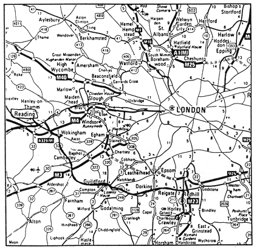
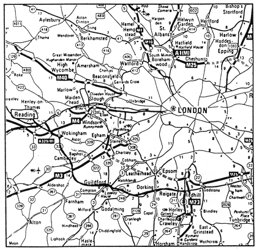
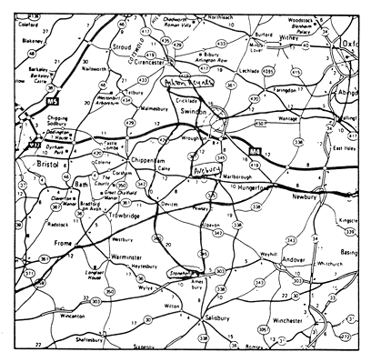

June 15, Gatwick, landing the next day--train to Reading--rowhouse drizzle, laundry
in the half-sun, endless brick enduring unchanged
at Reading, my step-mother's house, this polite stranger my newly-acquired step-brother,
says we met 30 years ago--over a wheelbarrow & childhood territory i vaguely remember
melodic repeats of English, speech patterns volleying back & forth 2 seats away--we can't catch all of it
read the author's Bio and Working Notes go to this issue's table of contents
 

HOW HUG A STONE(excerpts) by Daphne Marlatt
departure
an elderly man sitting at the back says we have just left land,
Baffin Island he means, now all is ice floes on black water,
crazy paving they have pulled the blinds on. for the movie
begins. Agatha Christie version of what we fly to, dense with
intrigue. take intrigued attention to a star system elderly
English lady plots, enraged mother at the heart of it: lost.
so as not to be lost, invent: one clear act in all that jazz. (in
flight? & if the plane goes down?)
invent (how we get here) flying along a sunset's brilliant flush,
intricate music in one ear to dull the engine roar, its possible
heartbeat stop, inventing still (to keep us aloft) a place to
land at the end of all this to, to. . . notice blue joggers on the
seat beside me, feet gone. elsewhere are we? (even here.) as
he slides back in:
"i LOVE to go into that lab'ratory." "what?" "the one that
"the one that
has a big hunk of shit that won't go down."
thus revised, flying along a sunset with our shit, leftovers,
earthladen sacs, thanks to 23,000 gallons of fossil fuel
sustained aloft for a few hours improbably in a DC 10. we
feed ourselves stories to dull our sense of the absurd. fed a
line so as not to imagine the end--linear version of our lives
unravelling in a look, back. mystery appeals to our belief
that things do make sense, this plot we're in, wrapped up
like knife fork & spoon.
& yet, left open, flapping, wide to the wind, without narrative
how can we see where we're going? or that-- for long
for long
moments now, we happen.
June near the river Clyst, Clust, clear. Clystmois
this holding wet & clear.
it's haysel, haymaking time, "Sweet an' dry an' green as't
should be, An full o' seed an' Jeune flowers." tedding &
cocking going on, shaking, turning, spreading. haytrucks go
lorries lumbering by these twisty lanes lined high with
hedgerow, no seeing over, cow parsley, stinging nettles,
campion, "day's eyes" & snails all colours coiled in their leaf
byways. jeune the young, green June delayed by rain. June
why do you punish me? "Take heede to the weather, the
wind, and the skie." indeed, make hay while the sun shines
you write, while the moon is on the wane. he wanes, my
son redeyed & watery, phlegmatic in the face of phleum
pratense grass of the meadow, timothy spikes erect a masculine
given name, god honouring. not her who is cut, full of young
vigour, from the living book, from the play of light & shadow,
nothing less than herb-of-grace, rue i find, there with the
queen's pinks in the clock that is a garden.
my aunt removing the dinner dishes:
"I can remember reading the Dandy when I was kneehigh
to a grasshopper and thinking it was terribly funny when this
chap was awarded a medal but they hadn't got a medal so
they gave him a razorblade for shaving gooseberries."
Avebury awi-spek, winged from buried (egg
nose stuffed eyes holes in the chalk ridge of sinal bones rushed
down back roads' upland grass wind weaving snakelike
through. old English words: the land, the land. man's life like
the life of cereals. woman's too.
bring to this place the line of a life (palm says it), motive in
currents of changing weather, angst, cold for this time of year
--& small, toy pistol in one hand, cupped, & sheltered by
the pelvic thrust of rock, jumps, gotcha mom!
 as if to fix it
as if to fix it
(sine), that jubilant ego in the face of stone, of wind flocking
grey wethers still gathered like (but not the same, not these)
sarsens now in place, immutable from long time back. &
front, weathered yes, in folds acquiring character we read
in, clothed & prickling now along the hairless spine, a line
meeting a circle, two in one so huge (small hill) barely visible
at grass view, red windbreaker fleck a sea of green & climb
some moat in his imagination scaled he calls me to: come &
get me
 the, all-powerful tickle,
the, all-powerful tickle,
gulp, wriggle gulping in the whole world hugged in ecstatic
limit, breath's. nothing still, no duration now (a line) creeps
through fields of (waves of) renewed green, cloud, light.
what was it they got? craniums & long bones in long barrows,
construction tools from 4000 years back, antler picks, rakes,
& some ox shoulderblade shovels. what perspective from that
elevation? matrix of chalk block walls arranged in the pattern
of a spider's web around & over a mound of turves, grass still
pliable though brown in colour. . . beetles. . . flying ants with their
wings showed them buried late July of 2660 B.C. why?
the line hypothesized druid lore (in Christian times), today
a collective need to endure winter to spring, when from his
knoll. . . / the Serpent will come from his hole / on the Brown Day
of Bride, singing, wave on wave emerging: & at centre, earth,
only earth.
narrative is a strategy for survival. so it goes--transformative
sinuous sentence emerging even circular, cyclic Avebury,
April-May leaps winged from buried. sheds lives, laps, folds,
these identities, sine: fold of a garment / chord of an arc (active
misreading). writing in monumental stones, open, not even
capstone or sill, to sky (-change). she lives stands for nothing
but this longstanding matter in the grass, settled hunks of
mother crust, early Tertiary, bearing the rootholes of palms.
they bring us up, in among stone-folds, to date: the enfolded
present waits for us to have done with hiding-&-seeking
terrors, territories, our obsession with the end of things.
how hug a stone (mother) except nose in to lithic fold, the
old slow pulse beyond word become, under flesh, mutter
of stone, stane, stei-ing power.

delphiniums blue & geraniums red
rose light in the blue, at eye level (where is the dormouse curled?) their
hedge--day's amber, stilled & stilling. watch fresh lettuce leaves, curled,
disappear in the spinner. watch a child, curled up in himself for comfort,
dreaming of blue. roselight makes of their kitchen unearthly hue, seraphic
even, in our vision blue, is a healing colour even a bird will spring toward.
but i was blue with cold on the Didcot Platform in a wind the intercity
diesels roar on through. torn holes in attention. out of nowhere we are
near the source. a shallow brook ripples by a few crosses at fords, a few
stone walls for leaning up against--the Thames, really? not that one. well-
spring. dayspring. home--when the walls come down, what kind of source?
that was Old Bernie, she said, on his last legs waiting outside surgery with
his stick, "they're all full up in there"--refused the chair she offered to
fetch from the grocer's. no relief from the blinking exit sign: alone & knowing it.
despite all this pulling together. Taunton, Weirfield. running out on the hockey
team blue with cold, "you can't be cold." grown older, painting the open wound
with iodine, "it doesn't hurt, it's for your own good really." slogans on the
road to selfless, sightless in the guise of ought-to-be--chrysanthemums, say,
on the unclipped village graves. when five-year-olds (are) looting burned-out
shops "these days of career marchers & young punks tearing up the streets.
it's all me-me, no sense of the common good, now have they?"
& if The Common Good, pointing its nineteenth century hand, has tyrannized
all sense of me, small voice essential to life? so that we falls apart, gone mad
at the mask of Reason which still is quoting Good in the face of annihilation:
tactical advantage, counterforce capability, stockpiling. the first few weapons
arriving do almost all the damage conceivable to the fabric of tbe country.
have done so, without ever arriving, the nest we live in full of holes these days.
& still: i suppose all these people know better than i--doubtful, paws to
eyes, small creature at the heart of dreaming some blue otherwhere. & that
is the reason, the story continues, circling back to its source, the dormouse
curls, imagining delphiniums blue, o blue/black hole at centre, folding in on itself.
 Daphne Marlatt
Daphne Marlatt